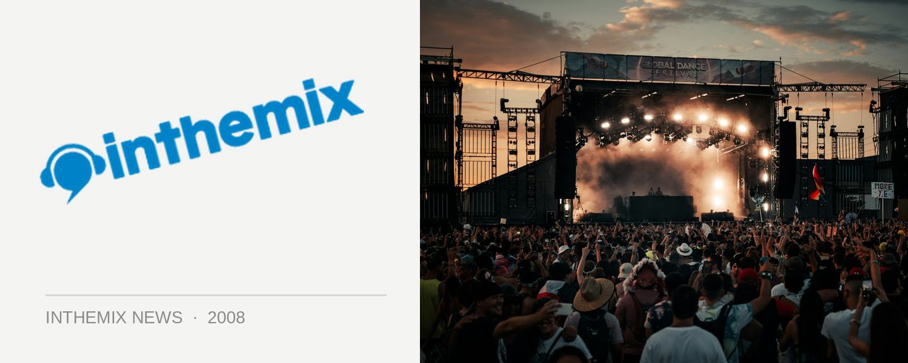

Foreshore makes its grand return to Canberra - check out the photos!
The Foreshore Festival made its mighty return to Canberra on Saturday courtesy of the Friction and Lexington Music crews, boasting a near perfect venue with the lakeside views of Commonwealth Place, arguably one of the best lineups ever seen at a small Australian festival and most importantly, idyllic weather that held out for most of the day. Check out the photos on inthemix!
> Check out the photos from Foreshore Canberra!
For those who made the effort to arrive early in the day, they were greeted by perfect sunny weather and a set from UK DJ legend Sasha at the waterfront mainstage. Kicking it off slow and deep for the first hour of his set, the intricate minimal/prog rhythms he was throwing down were done perfect justice by the soundsystem, the quality of which was reflected across the other two stages – festival promoters from across the country, take note! As Sasha moved into the business end of his two hour set, he gradually pitched it up into the bangin’ melodic prog that he made his name with. There couldn’t have been a better way to get the day moving.
For the rest of the day, Foreshore offered the perfect musical balance of mega-successful live acts on the main stage like Pnau and The Presets, and some of the world’s finest DJ/producers in the dance tent like Holland’s 16 Bit Lolitas and… UK trance icons Above & Beyond. Except the latter act tragically never ended up making it to the festival after experiencing flights delays from their gig at Global Gathering in Brisbane. Luckily, Canberra DJ/producer and Above & Beyond protégé Jaytech was on hand to hold down the fort in their absence, and he delivered a sterling set of melodic progressive house that very nearly managed match the euphoria that his trance counterparts would have created. Nearly.
ARIA winners The Presets were tasked with closing the main stage and then with less than half an hour to go, the heavens opened up in a fashion befitting of the Foreshore legacy. As the punters started to flee and The Presets’ signature laser show began bursting out over the crowd in the final moments, the sight of raindrops falling on the green rays of light made for a stunning spectacle that won’t be forgotten quickly.
To relive your Foreshore experience, check out inthemix’s festival page here.